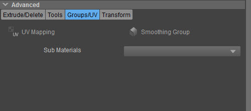
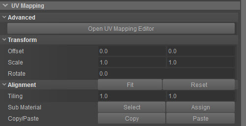
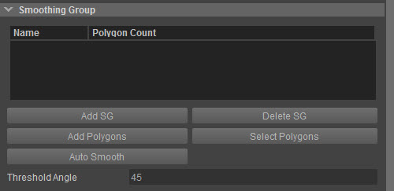
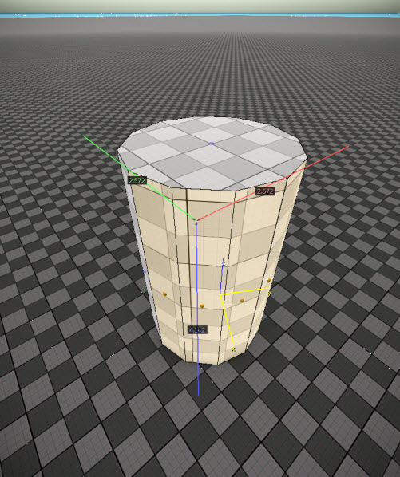
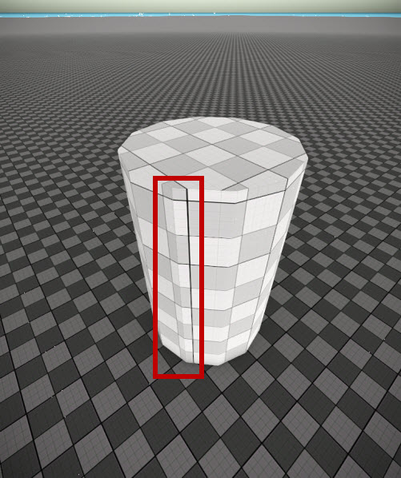

Overview
When clicking the Groups/UV button in the Advanced section, new options appear underneath:

| Button | Description |
|---|---|
| UV Mapping | Opens extra UV Mapping options |
| Smoothing Group | Opens extra Smoothing Group options |
| Sub Materials | Displays sub-materials when the object you are editing has a multi-material assigned to it, which has sub-materials specified in the multi-material. If it does, you can use this drop-down menu to assign the sub-materials (which are inside the multi-material) to a different group. |
With UV mapping, you can change the look of your Designer object (you can rotate, scale and swap the texture or material of your object).
With smoothing groups you can give your edges a smoother look (without altering the geometry or the edge itself).
UV Mapping
When clicking the UV Mapping button in the screen above, the following options will appear underneath:

Please note that you need to have a polygon selected, otherwise these options will not have any effect.
Advanced
| Option | Description |
|---|---|
| Open UV Mapping Editor | Opens the UV Mapping Editor (also found under Tools -> Designer Tool -> UV Mapping.) |
Transform
| Option | Description |
|---|---|
| Offset | Moves the texture according to the offset you enter (first field is Y and second field is X). |
| Scale | Scales the texture first fild is Y and second field is X). |
| Rotate | Rotates the texture on the polygon based on the degree you enter. |
The Transform options only work if you have selected a polygon.
Alignment
| Option | Description |
|---|---|
| Fit | In case a texture is larger than the selected polygon, this will try to make it fit by adjusting offset, scale etc. |
| Reset | Resets the alignment back to default. |
| Tiling | How the texture will be scaled; if you enter 5, this option will try to fit the texture on the polygon 5 times (so it will scale the texture down to 0.2x the original size). |
| Sub Material |
|
| Copy/Paste |
|
Assigning Different Sub Materials to Different Polygons
With the Sub Material options you can assign one Sub Material to one polygon of a Designer Object and a second (or third, fourth, etc) to another polygon. To do this:
- Select the Designer Object
- Assign a multimaterial to it (Properties -> General -> Material)
- Go back to the Designer Tool and activate Advanced -> UV Mapping
- Click Select and select the polygon(s) of which you want to change the submaterial
- Under Advanced -> Sub Materials, choose the desired submaterial (the first one will always be assigned to all polygons by default)
- Click Assign
To find out how the UV Mapping Editor works, see this page.
Smoothing Group
Smoothing Group creates groups of polygons that are smoothly shaded - as opposed to the default flat shading.
The shape of the object will stay the same; only the shading will change so that polygons in the same group appear to be smooth.
When you select the tool, you get a panel with various buttons to manage smoothing groups.

| Option | Description |
|---|---|
| Add SG | Add an empty Smoothing Group. |
| Delete SG | Delete the selected Smoothing Group. |
| Add Polygons | Add the selected polygons to the selected Smoothing Group (select polygons through the polygon selection tool first before doing this). |
| Select Polygons | Select the polygons in the selected Smoothing Group in the Perspective viewport. |
| Auto Smooth | This tool sets the smoothing groups based on the angle between polygons. Any two polygons will be put in the same smoothing group if the angle between their normals is less than the threshold angle which can be adjusted in the Threshold Angle box under this button. |
| Threshold Angle | This threshold value is used for the Auto Smooth. This value specifies the maximum angle of two normals between two polygons that determines whether those polygons will be put in the same smoothing group. |
How It Works
1. Select polygons by clicking Polygon in the Selection section and clicking on the polygons that you want to select on the Designer object. Hold Ctrl to select more than one polygon:

2. Click Add SG to add the selected polygons as a Smoothing Group. The selected polygons will be smoothed when you click this button. You'll see that the edges look more smooth afterwards:
Before/after 